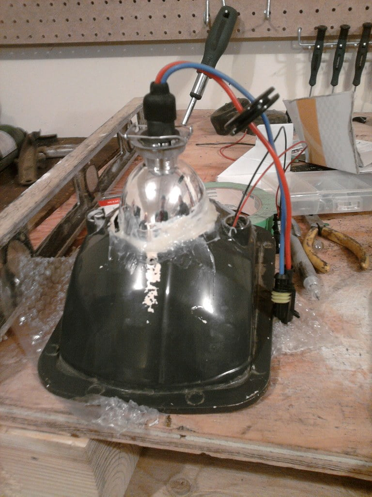

-
I was not pleased at the results aftermarket housings have with HID. Even though there is more light, there isnt that much "usable" light and glare is everywhere. I purchased these projectors from http://www.theretrofitsource.com. They are the Morimoto mini H1. They include a solinoid that will enable high beams, and they are compact.
I also did not like it when others have hids with light all over the place. Hopefully selling a few of these will help those in need.
As you can tell, I will be doing a few of these to sell.
Image of the projector, the shroud I am holding is for another car.
I picked up these Pilot brand sealed beam conversions. They cost a few bucks more than the standard ebay brand. But they have a plastic lens, not cheap glass, so they will last a long time..and not crack.
I put it in the oven for a few minutes to seperate the plastic. 250 degrees for 7 minutes.
Made alignment marks and cut a big hole so the projector can sit back.
Proposed fit with shroud, I may let it float 1/4 inch.
I usually use bolts to secure the projectors. But these projectors utilize a screw in base. So I made something to cover my big hole. Tomorrow im going to secure the opening with some ABS plastic then cut a hole for the base of the projector.
Then I bonded the abs (after giving it a good sanding) with plastic weld. Here is a comparison of a non modified housing. I will be sticking out maybe 2 inches from a stock housing. Its going to be a close fit on the drivers side.
Tomorrow Ill buy some ABS plastic for the top, then more plastic weld and put more plastic weld at the base.
This is a prototype set. I may change my design for the second set I will be making.My Build Thread -
Re: 7x6 bixenon Projector Retrofit
What kind of price range do you think these will land in? If they work well, I'm sure I'll look into a pair, I've done projector converts on every vehicle I've had, and I always love when they're well done.
P.S. how about blacked out housings? -
Re: 7x6 bixenon Projector Retrofit
The paint, man dont even get me started. Im really not sure what I want to do. LOL. I was thinking of black housing the whole thing, then the front shroud that has the beveled edge leave that chrome. But Its going to be the last thing on my list. Perhaps ill leave it like this and drive on it for a week to test its inegrity, then if someone pays and request a different color arrangment, Ill do it.solar67 wrote: What kind of price range do you think these will land in? If they work well, I'm sure I'll look into a pair, I've done projector converts on every vehicle I've had, and I always love when they're well done.
P.S. how about blacked out housings?
As for price, companies who do this professionally charge quite a bit. I seen similar ones that are NOT bixenon go for 350 from this MR2 company. I may put mine in the market for 190-300. It depends on how clean it will look like. Price is still fair because the projectors go for 120 a pair. This current set, its not the cleanest I wanted it to be (prototype). So I wont hike up the price to much. I just dont like that ABS rear end. Just proves to show how anal I am. lol some other people may be like "whatever" lol.My Build Thread -
Re: 7x6 bixenon Projector Retrofit
Lol, I can respect a taste for quality feel. The projector lenses are gonna be expensive either way, and if you save even a bit on the housings, it may help you sell more in the long run with out much compromise on quality, as long as it's well made in the first place. -
Re: 7x6 bixenon Projector Retrofit
Yea I tried to price out the housings. The only way it would be cheaper would be to use glass. It will distort my output a little, and possibly crack....so what's the point. Spend a few more bucks.solar67 wrote: Lol, I can respect a taste for quality feel. The projector lenses are gonna be expensive either way, and if you save even a bit on the housings, it may help you sell more in the long run with out much compromise on quality, as long as it's well made in the first place.
As for the rear of the housing, I just pried the living snot out of it and its permanently bonded. Makes me happy. A little bit of silver or black paint will cover the rest cosmetically.My Build Thread -
Re: 7x6 bixenon Projector Retrofit
this is much better. though I might have gone with the mini D2S version so people have the option of using genuine Philips/Osram bulbs, not to mention the option of Morimoto's 50W bulbs if you want to be ricockulous.
props to you sir for doing it right. while I usually lean towards OEM components for HID retrofits, looking at some of Morimoto's products, it looks like they make some good stuff actually intended for HID use such as the optics in their projectors and the quality of their bulbs (though I just ignore anything not meant for a true HID bulb socket, which is why I like D2S and similar conversions)
-
Re: 7x6 bixenon Projector Retrofit
I personally think the same way as you, oem is the way to go. But I heard so many negitives about the mini d2s and how the mini h1 was superior. I still use a few aftermarket stuff and have used OEM bulbs for my other retros.Andrevas wrote: this is much better. though I might have gone with the mini D2S version so people have the option of using genuine Philips/Osram bulbs, not to mention the option of Morimoto's 50W bulbs if you want to be ricockulous.
props to you sir for doing it right. while I usually lean towards OEM components for HID retrofits, looking at some of Morimoto's products, it looks like they make some good stuff actually intended for HID use such as the optics in their projectors and the quality of their bulbs (though I just ignore anything not meant for a true HID bulb socket, which is why I like D2S and similar conversions)
Morimoto stuff is really good. I used their bulbs and they are a hair off of alignment, but for the price....its better than cheaper aftermarket, and much better than DDM.
But for the size and what you get out of this projector, I think its perfect and within a reasonable budget.My Build Thread -
Re: 7x6 bixenon Projector Retrofit
I been busy last few days, finally got time to work on these.
I cut a circular piece of ABS plastic and plastic welded it to the base.
Then I grinded down the base with the top. I also let these sit in a bucket of water for 5 minutes to see if there was any leaks. You see a gap in the glue, but its nothing to worry about. I glued the base and then put that cover on top of it. From inside its sealed tight.
Painting them black with krylon fusion for plastic. Unfortunatly its a little bit more gloss than I would like, but its the rear, no one is going to see it.
My Build Thread -
Re: 7x6 bixenon Projector Retrofit
Drilled a hole for the projector mount and a small hole for the high beam wires. Its a little bigger, but I did this to minimize any fogging inside the light.
Mounted
Clearence. The yellow stuff is the plastic weld. I made sure that from inside its glued as well
Lens isnt fully on, just testing.
Rear mount
My Build Thread -
Re: 7x6 bixenon Projector Retrofit
Im done :-D
But ran into an issue.
The back of my housing hits that metal bar to the right just a bit. I wonder if I should just cut it off. It seems to support the anchor point where the motor makes the light go up and down. I wonder if I should.My Build Thread -
Re: 7x6 bixenon Projector Retrofit
i would slot it. and then paint it. as long as you cut it nice- it will be worth the time saved in trying to do something else to make it fit and it will look legit.
either way, what else can you do to make it fit? it's most likely your only solution…
nice work! you can also hit the krylon gloss black with 800 grit sandpaper to dull it up or spray some regular satin or flat black paint over it, since it's already bonded to the plastic. -
Re: 7x6 bixenon Projector Retrofit
I wouldnt mind cutting it as long as it is still strong. It will make room for my next project.... :-D for the lights.Careless wrote: i would slot it. and then paint it. as long as you cut it nice- it will be worth the time saved in trying to do something else to make it fit and it will look legit.
either way, what else can you do to make it fit? it's most likely your only solution…
nice work! you can also hit the krylon gloss black with 800 grit sandpaper to dull it up or spray some regular satin or flat black paint over it, since it's already bonded to the plastic.
I just dont want to take apart my housing again lol. I can make a clean cut though, really clean. I use my mitre saw lol.My Build Thread -
Re: 7x6 bixenon Projector Retrofit
pretty slick, can't wait to see pics of the cutoff lines once installed!

1988 300zxt. gt35, stance, etc. Wheels: Varrstoen ES2 18x9.5 et-13 225/40. 18x10.5 et0 245/40
1990 jetta vr6'd -
Re: 7x6 bixenon Projector Retrofit
Ill cut them a little tomorrow.
I was searching the net, I wanted to show how some people mount projectors in these housings.
My Build Thread -
Re: 7x6 bixenon Projector Retrofit
Well ran into an issue trying to fit this into the z. The housing itself is a tad to big for our car. The thickness of the plastic lens and the housing is a little thicker than the bracket that holds the housing in place.
The only way to get it on nicely is to be able to take off the ring that holds the factory housing and put it on without bending…thats not going to happen lol.
I got another set of housings, the glass lens. Those should fit without issue.
On a good note, I put these in a buddies s13, fits perfectly without cutting. He was amazed because all retrofits involve cutting the metal. His car rides like a rock and its a great car to test the durability of my design.My Build Thread

Copyright © 2006–. All rights reserved. Privacy Policy